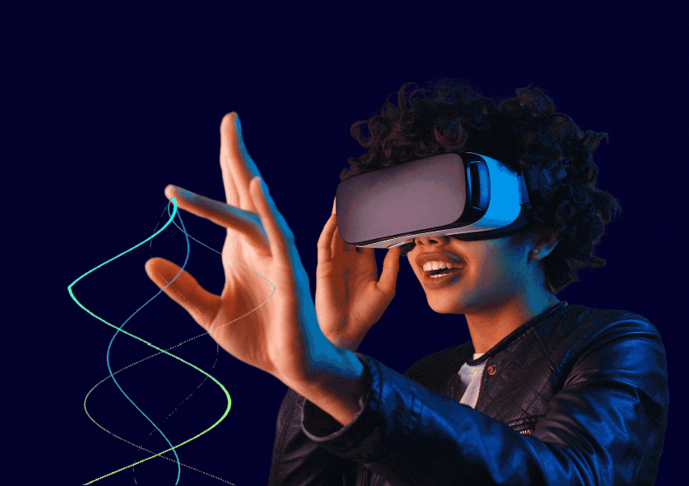
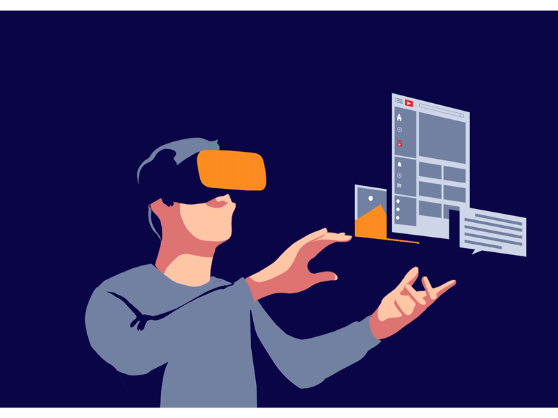
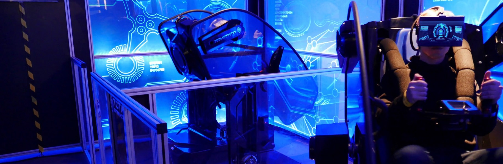

Віртуальна реальність (virtual reality, VR, штучна реальність) — це створений технічними засобами світ, який передається людині через її відчуття: зір, слух, дотик. Віртуальна реальність імітує як вплив так і реакції на вплив.

Користувач одягає спеціальне обладнання, VR-шолом, і в ньому дивиться або взаємодіє з VR-контентом. На розташований перед очима дисплей виводиться відео в форматі 3D. Прикріплені до корпусу гіроскоп і акселерометр відстежують повороти голови і передають дані в обчислювальну систему, яка змінює зображення на дисплеї в залежності від показань датчиків. Повне візуальне занурення дозволяє досягти впливу великої кількості огранів чуття людини.

Абревіатура VR розшифровується, як Virtual Reality — віртуальна реальність. Віртуальна реальність повністю змінює середовище, яке ми бачимо навколо через спеціальні пристрої. VR імітує абсолютно нове середовище. Користувач бачить все у тривимірній перспективі, а рухаючи головою може бачити предмети під іншим кутом. Найчастіше VR використовують в ігрових цілях, а також у військових та наукових дослідженнях. Звісно взаємодія з віртуальною реальністю напряму залежить від тієї платформи, яку ви використовуєте. Переважна більшість VR-окулярів розроблені для статичного використання. Найбільш відомими VR-пристроями є Oculus, бо по мірках вартості VR-шоломів вони вважається доступними. Можемо пригадати також PlayStation VR. Google та Samsung теж пробували себе в цій сфері. Вони виготовляли доступні пристрої, які працювали за допомогою смартфона. Ефект занурення не настільки відчутний, але для того, щоб познайомитися з віртуальною реальністю цілком достатньо.
Абревіатура AR розшифровується, як Augmented Reality — доповнена реальність. Якраз цей напрямок зараз розвивається найбільш стрімко. Суть технології полягає в тому, що вона додає в реальний світ віртуальні об’єкти, тобто реальне середовище не виходить з поля зору користувача, але в ньому з’являються додаткові об’єкти. Іншими словами AR — це своєрідний віртуальний фільтр, який накладається на реальність. Ми можемо сприймати доповнену реальність через екран смартфона чи AR-окуляри Найбільш відомі приклади пристроїв доповненої реальності — Google Glass, які так і не стали популярними через урізаний функціонал та Microsoft Hololens, які на сьогодні, мабуть, найближче підійшли до того, що ми вкладаємо в слово AR, але вони у свою чергу коштують кілька тисяч доларів.
Абревіатура MR розшифровується, як Mixed Reality — змішана реальність. Ця технологія є гібридом AR та VR. Працює технологія так, що MR-пристрій сканує середовище в якому ви знаходитесь і створює відповідну тривимірну карту і відповідно до розташування фізичних об’єктів накладає цифровий контент. Фактично, MR додає цифровий контент в реальне середовище, де ви можете з ним взаємодіяти. Розробники стверджують, що з MR світ стає інтерактивним. У всіх вищезазначених технологій є схожість і кожна з них забезпечує новий інтерактивний досвід. Не завжди можливо чітко провести межу між технологіями та їхніми можливостями. Вже можна спрогнозувати, що цей ринок буде розвиватися дуже стрімко, оскільки цими технологіями займаються провідні технологічні гіганти.
Технологія віртуальної реальності лише нещодавно увійшла в наше життя, але насправді вона не така нова, як можна було б очікувати. VR відома людству вже давно.
Чарльз Уїтстон винайшов перші форми стереоскопу 1838 року. Цей пристрій вирористовував можливості мозку поєднувати два слабких та різних зображення в одне, ізолюючи змішану картинку над кожним оком і створюючи тривимірний ефект. Продукти на кшталт дисплея Google Cardboard, VR у мобільних телефонах використовують приблизно ідентичні методи для створення глибинного сенсу.
1929 року Едвін Лінк винайшов перший моделюючий політ. Тренажер Лінка був призначений для безпечного та ефективного навчання пілотів. Під час Другої світової війни більш ніж 500 тисяч авіапілотів були треновані, використовуючи винахід Лінка.
Розроблений Мортоном Хайлігом 1 1958 році апарат Sensorama долучив всі органи чуття. Розробка мала стереоскопічний кольоровий дисплей, генерувала стереозвук, вібрації та навіть атмосферні ефекти. На жаль, Sensorama так і залишилася концепцією, оскільки Хайліг не міг знайти інвесторів які б допомогли йому профінансувати проект. Втім згодом цей пристрій став натхненням для комп'ютених вчених.
Іван Сазерленд разом зі своїм учнем Бобом Спраулом створили Дамоклів Меч, щось типу шолому, підключеного до комп'ютера, який дозволяв користувачеві побачити сіткоподібні поверхні, накладені на реальний фон. Ці сіткоподібні поверхні змінювалися, коли користувач переміщував свою голову. Втім, такий пристрій, окрім тогож не став практичним. Він був доволі важким і для функціонування вимагав допомоги механічного маніпулятора. Тому Дамоклів Меч і не вийшов зі стадії лабораторного проекту.
У 1978 році команда MIT розробила "Aspen Moviemap", ранню систему гіпермедіа, яка дозволила користувачам віртуально здійснити екскурсію через Аспен, штат Колорадо. Програма була простою симуляцією міста, мала три режими: літо, зима та багатокутники. Ружим багатокутника був грубою 3D-моделлю міста.
Компанія Sega представила гарнітуру віртуальної реальності Sega VR, що являла собою аксесуар для консолі Sega Genesis/Mega Drive. Передбачалось, що її випустять у продаж разом із першими чотирма іграми в 1994 році, але вона так і залишилася прототипом, перетворившись у фіаско для Sega. Проте це був перший великий приклад ігрової компанії, що проявила інтерес до віртуальної реальності.
Nintendo уважно стежила за ініціативами Sega VR, анонсувавши ігрову консоль Nintendo Virtual Boy, яка могла зображати стереоскопічну 3D-графіку. Геймери розміщали окуляр нарпоти голови, що дало змогу бачити монохромний дисплей. Однак Virtual Boy провалився як проект через відсутність кольору в зображенні,а також з тієї причини що в зручному положенні консоль не була проста у використанні.
У 2007 році Google запустив програму Street View, яка дозволяє реалістично представляти карти по всьому світу а в 2010 році в цей сервіс був застосований стереоскопічний 3-D режим.
У 2010 році Палмер Лаки дебютував перший прототип Oculus Rift. І хоча він був засновани на оболонці іншої 3D-гарнітури і був здатний тільки до обертального стеження за рухами голови, він мав 90-градусне поле зору, яке було революційним на той час.
У 2013 році ігровий гігант Valve виявив спосіб зменшення відставання та розмивання у VR за допомгою дисплеїв з низькою стійкістю, і відкрито поділився цією технологією. Oculus та інші пізінше затвердили технологію на власні екрани.
Valve запустила прототип Stream View, який є попередником сучасних гарнітур компанії на ринку.
Facebook також придбала Oculus за 2 мільярди доларів у 2014 році.
У 2014 році компанія Sony оголосила про проект Morpheus, який пізніше дедютував систему PlayStation VR для PlayStation4. PSVR є однією з найпопулярніших та доступних пристроїв VR, а Sony продовжує сприяти розробці ігор та програмного забезпечення для своєї платформи.
У 2014 році компанія Google оголосила про кардбоард, власний стереоскопічний переглядач для смартфорнів. Кардбоард є одним із найпростіших і доступних варіантів занурення у світ VR, і для цього потрібен тільки смартфон, здатний запускати програми.
У 2014 році FOVE оголосила про створення першої глави VR-гарнітури з метою отримання 250 тис. доларів на Kickstarter. Гарнітура FOVE спрямована на зменшення надмірного руху голови, тим самим зменшуючи втомлення гравця в процесі.
У лютому 2015 року Valve та HTC оголосили про гарнітуру Vive та контролери, яка використовує технологію відстеженя в масштабі приміщень, і вважається однією з лідерів сучасної технології VR.
У 2017 році увага до точного звуку продовжує зростати, коли все більше і більше компаній потрапляють у індустрію аудіовізуальних сервісів. Розвиток дисплеїв з вищою роздільною здатністю продовжує бути важливим для того, щоб створити максимальний рівень занурення для користувача, а також відтворення точного та реалістичного звучання в навушниках.
На додаток до виробників апаратних засобів VR, таких як HTC, Oculus та Sony, піонери VR продовжують розробляти більше захоплюючих технологій для створення привабливих віртуальних світів. Деякі з них працюють над створенням віртуальних платформ для соціальних мереж, деякі розробляють захоплюючі ігри, а інші — за кадром, розробляючи ігрові та звукові двигуни, щоб надати розробникам інструменти для підтримки розвитку галузі.
Віртуальна реальність продовжує стрімко розвиватися, трансформуючи те, як ми працюємо, навчаємось і лікуємось. 2024 рік став важливою віхою для VR, зробивши її більш доступною і функціональною.
Інновації в галузі автономних шоломів, інтеграція штучного інтелекту і злиття з доповненою реальністю відкрили величезні можливості для бізнесу, освіти, охорони здоров’я та багатьох інших галузей.
Незважаючи на виклики, такі як висока вартість обладнання та необхідність навчання користувачів — потенціал зростання VR очевидний.

З часом, коли технології вдосконалюються, а вартість пристроїв знижується, віртуальна реальність стане невід’ємною частиною нашого повсякденного життя. Інтеграція з AI, AR і метавсесвітом обіцяє ще більше можливостей для створення унікальних і персоналізованих віртуальних світів, які будуть впливати на нас не тільки в розважальній сфері, але і в професійному та особистому житті.
VR — це вже не просто технологія майбутнього, а реальний інструмент, який поступово змінює наше життя, і в найближчі роки її вплив тільки посилиться.